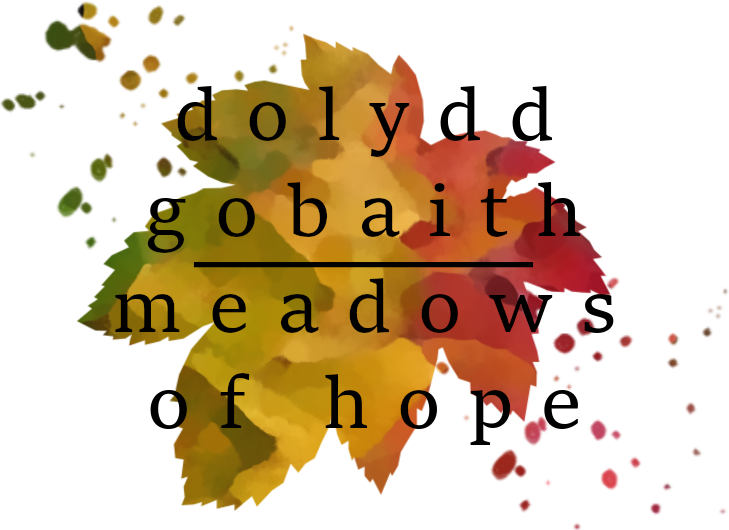

Below are some links to some of the websites I have built.
"Dolydd-Gobaith" which translates to "meadows of hope" from Welsh, is a regenerative agriculture project based in the Tanat valley in Wales. Click on the dolydd-gobaith logo below to visit the site.
"Fferm Goedwig Gymunedol Dyffryn Tanat Valley Community Forest Farm Community Interest Company was established in September 2020 but the idea of some type of community nature reserve raised its head several years earlier on a Christmas walk in Delamere Forest. When 30 acres of upland sheep pasture came up for sale in Pen-Y-Garnedd, Montgomeryshire in 2019, the idea became a real possibility. The seller of the land was remarkably patient while we raised £120,000 but in February 2021 the land finally changed hands and became a community asset. We held a competition for an appropriate name for the land that was less of a mouthful than the official name. The winning entry was Dolydd Gobaith (Meadows of Hope) which I feel sums up the sentiment behind this project."

The Father Figure is a personal trainer, specialising in parent-child excersises. Please click on the logo below to visit the father figure website.
"Here at The Father Figure we are on a mission to build a fitter, more mobile parenting community. We want to provide you with the tools to prepare for your upcoming birth or the new physical demands of parenthood. With live and recorded video workouts with our lead trainer, Dan, as well as instructional videos and access to a community of like-minded parents, we provide an adaptable, flexible and fun approach to exercising with your bump or your little one!"
Wild food Wales is a website advertising a holiday letting in Wales. Please click on the link below to visit the site.
"We are situated just outside of Llanfyllin in the county of Powys. On site, along with geese and chickens, we have a number of bee hives and specialise in home made bees wax products and honey.
We also have holiday accomadation on site, in the form of a self catering cottage attached to the main house. If you are looking for a peaceful retreat in the country, then this is the place for you!"